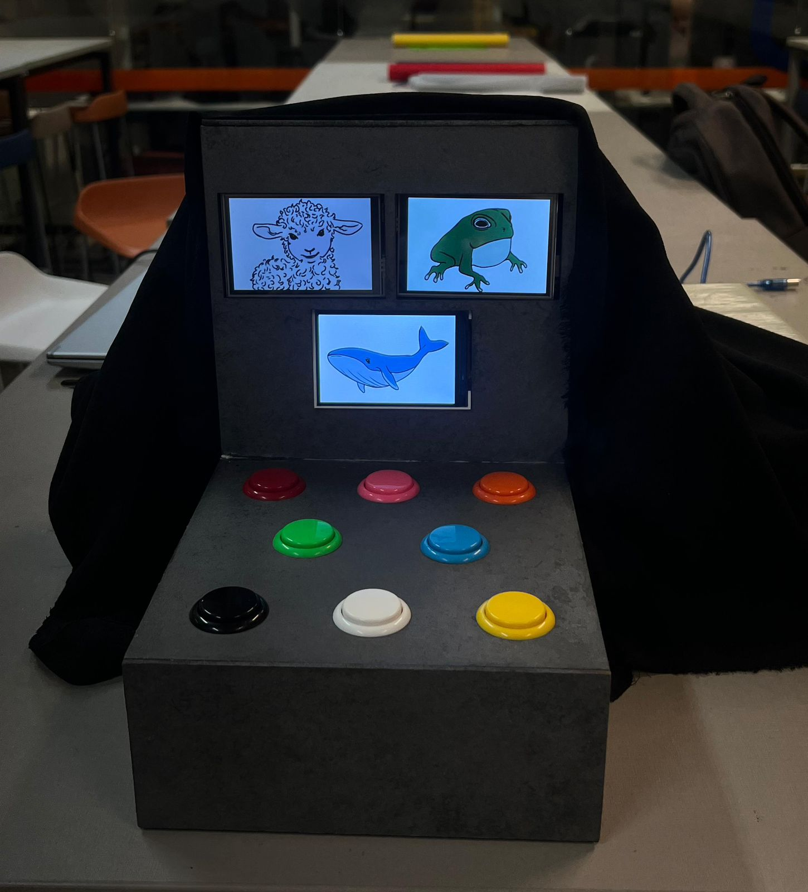
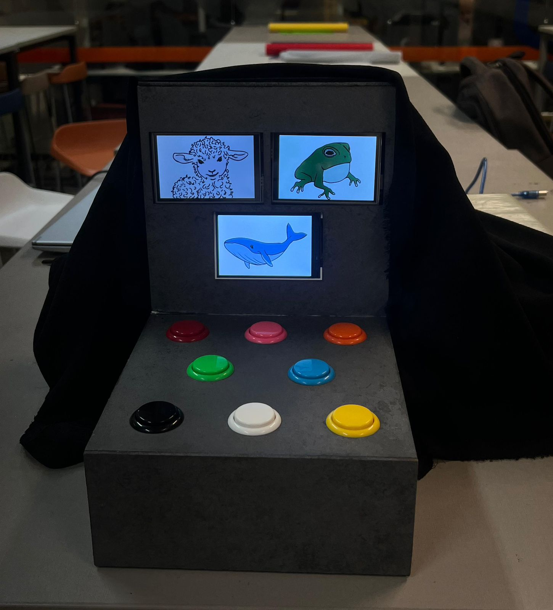

🀠Animal Quest
O projeto do Animal Quest foi produzido a partir de pesquisas aprofundadas sobre deficiência intelectual e metodologias de ensino baseadas em jogos (game-based learning). Com base nesses estudos, desenvolvemos uma proposta que une inclusão e ludicidade, utilizando a diversão como meio para estimular habilidades cognitivas, com foco especial no raciocÃnio lógico.
Trata-se de um jogo multissensorial que combina estÃmulos visuais (imagens), auditivos (sons) e táteis (botões). Utilizamos três displays e oito botões coloridos, que funcionam de maneira simultânea, criando uma experiência envolvente e acessÃvel para diferentes perfis de usuários. Os oito animais exibidos nas telas foram desenhados pela equipe, com atenção especial à clareza e ao apelo visual. Foi um projeto feito com a colaboração e esforço de todos, para que dessa maneira fosse atingida a meta principal.
 
